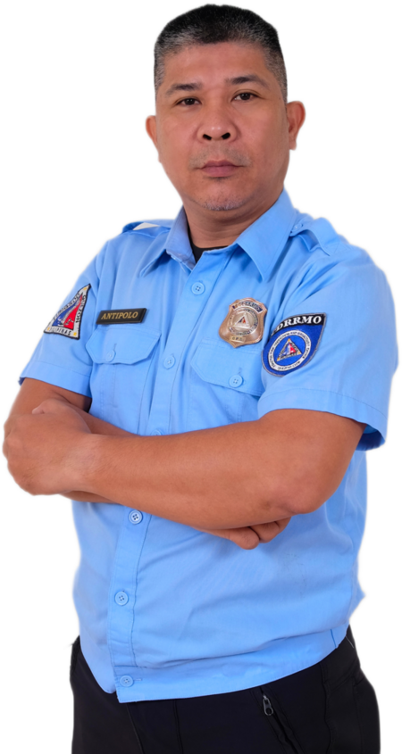
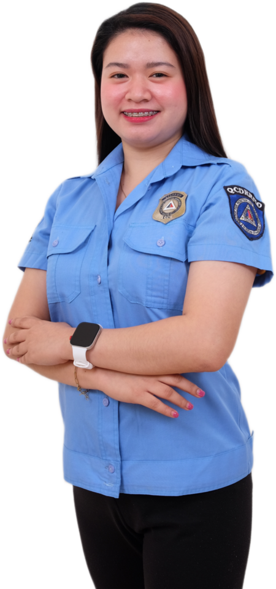
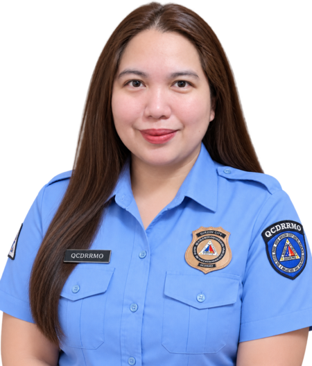
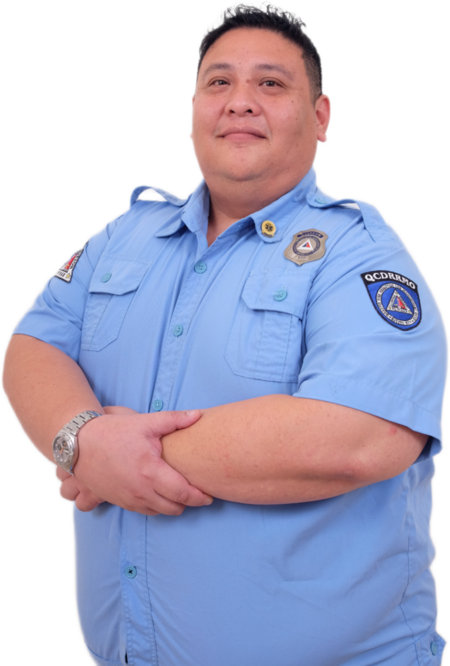
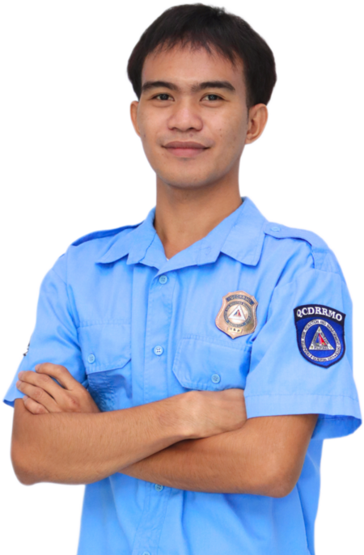
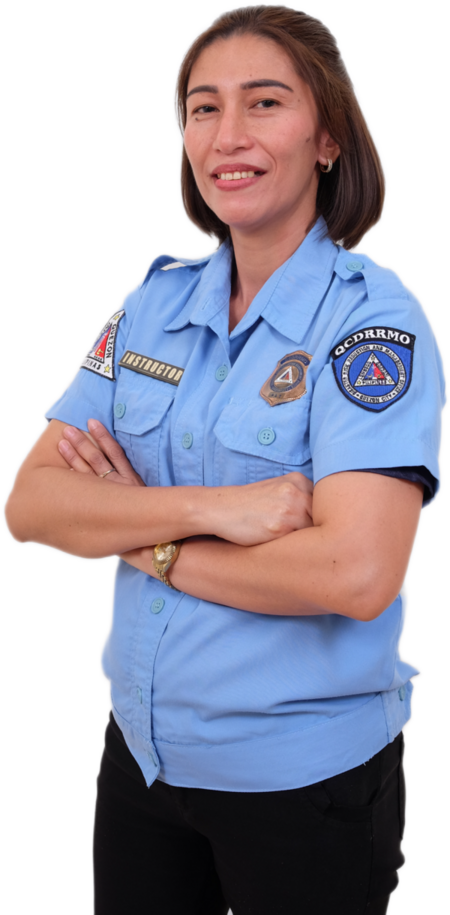
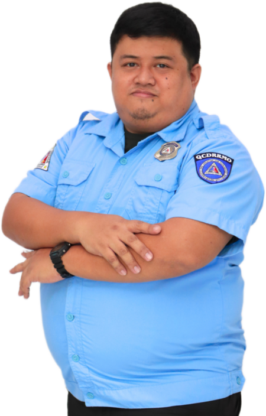
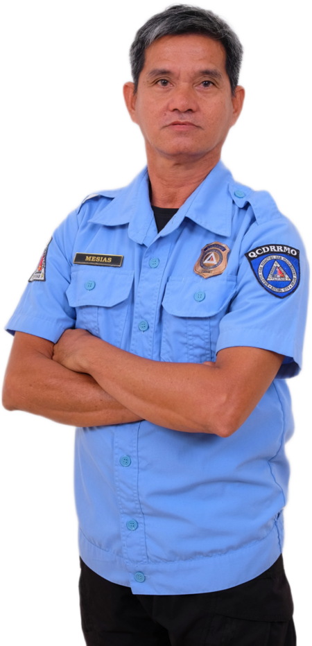
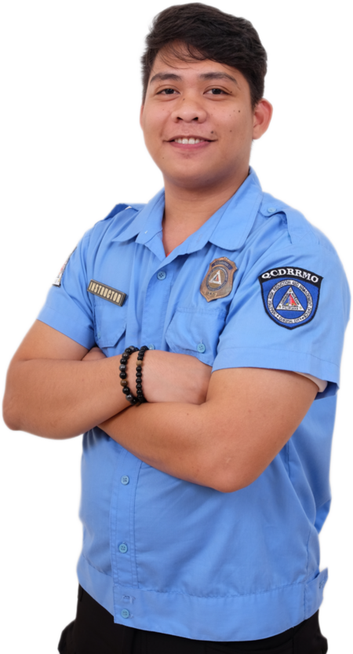
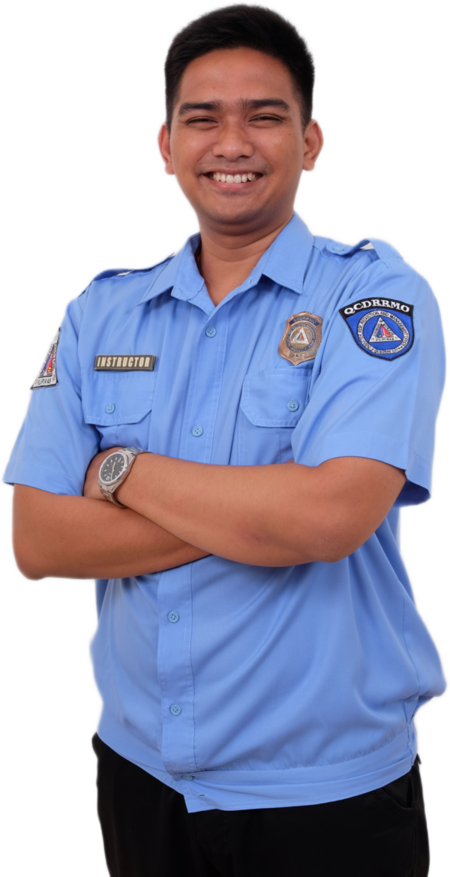

EnP Ma. Bianca D. Perez-Diamante
Head, Quezon City Disaster Risk Reduction and Management Department
Who we are
The Capacity Development and Knowledge Management Section builds Quezon City's readiness by training the people who respond first — barangay teams, company safety officers, and school staff.
OUR TEAM
Select a team member to read their CV.
Head, Quezon City Disaster Risk Reduction and Management Department
OIC, Capacity Development Section
Supervisor, External Trainings
Supervisor, Internal Trainings

Technical Training Team Lead
Secretariat

Secretariat

Instructor
Instructor

Instructor
Instructor
Instructor

Instructor

Instructor

Instructor

Instructor
Instructor

Instructor

Instructor
GOOD TO KNOW
Barangays, companies, and schools within Quezon City can request any of our programs.
No. All of our trainings are completely free.
Reservations for trainings must be made at least 2 weeks before the training date.
Yes. You can request the topics you want covered in your training.
GET IN TOUCH
QCDRRMD, Kalayaan Avenue
Quezon City Hall Compound
Quezon City, Philippines
0927-556-4941 (Viber)
8988-4242 local 8038